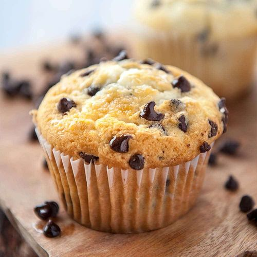

Muffins

Sweet & Delicious Muffins
These light and spongy gluten-free muffins are made with almond flour instead of regular flour. Nonfat Greek yogurt is one of the secrets to keeping the texture so fluffy.
Ingredients
- 3 cups blanched almond flour
- 3 teaspoons baking powder
- ½ teaspoon salt
- ¼ teaspoon baking soda
- 2 eggs
- ⅔ cup white sugar
- ½ cup unsalted butter, melted
- ½ cup nonfat Greek yogurt
- 1 teaspoon vanilla extract
- 1 cup semisweet chocolate chips, divided
- 1 tablespoon blanched almond flour
Steps
- Preheat the oven to 425 degrees F (220 degrees C)
- Sift 3 cups almond flour together with baking powder, salt, and baking soda into a bowl and set asid
- Mix eggs, sugar, melted butter, Greek yogurt, and vanilla extract together in a bowl with an electric mixer until smooth and creamy. Add flour mixture into the wet ingredients and mix until well combined, but be careful not to overmix.
- oss 3/4 cup of the chocolate chips with 1 tablespoon almond flour in a bowl so that the chips are lightly coated. Fold the coated chocolate chips into the batter. Distribute the batter evenly between 10 paper-lined muffin cups, filling the cups all the way to the top. Sprinkle remaining chocolate chips over the tops of the muffins.
- Bake in a preheated oven for 5 minutes, then reduce heat to 350 degrees F (175 degrees C). Continue baking until the tops are golden and a toothpick inserted into the center of one of the muffins comes out clean, 12 to 15 minutes.
- Cool muffins in the pan on a wire rack for at least 5 minutes before serving.